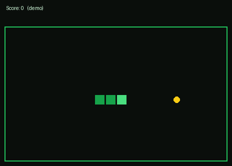

* to grow.Features
- C++20, dependency-free (terminal via
termios+ ANSI codes) - Speeds up slightly as your score grows
- Tested logic (
ctest), clang-format + clang-tidy gates in CI - Static release binaries on the releases page
Build & run
cmake -B build -DCMAKE_BUILD_TYPE=Release
cmake --build build -j
./build/snake --width 30 --height 16 --fps 12Keys
| Key | Action |
|---|---|
←↑↓→ / WASD | Steer |
p / space | Pause / resume |
r | Restart |
q / Ctrl-C | Quit |